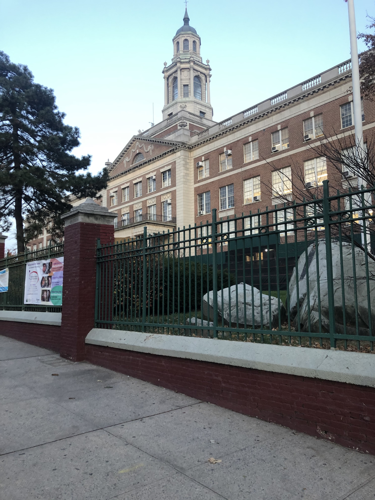

Hundreds of NYC Schools Lack Designated Physical Education Spaces
In 2017, Mayor De Blasio announced a $385 million initiative to create PE spaces in 200 schools by the year 2021.
At the time of this announcement, around 1,800 schools did not have a designated PE space, according to the Department of Education assistant press secretary Isabelle Boundy. “The DOE works in lockstep with the School Construction Authority (SCA) and individual schools to explore a variety of options to ensure all students have access to space for PE,” Boundy said.

The George Washington Educational Campus in Washington Heights is equipped with a gymnasium, outdoor yard and pool. Photo by Lisa Salinas / NYC News Service
Today, there are still over 400 schools without a designated space for physical education. (Gymnasiums that do not share rooms for other activities, outdoor yards and weight rooms were considered designated PE spaces for the purposes of this article). It is unclear where De Blasio’s initiative currently stands. When we asked the DOE what renovations and expansions have been made since this announcement, Boundy responded: “The first phase focuses on select schools that do not have any designated PE space.”
For the purpose of this exercise, designated PE spaces are considered gymnasiums, weight rooms and outdoor yards. Map by Lisa Salinas / NYC News Service
Data DiaryThe lack of designated PE spaces can have a negative effect on students, physically and mentally. “Access to a gym will promote health in children, who are the future leaders,” said Fe Florimon, chair of the District 12 Youth and Education Board. “The children who we can show the importance of being physically active, will be the children who will be at less risk of being obese and depressed.”